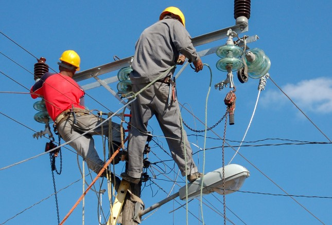

Trusted Powerline Services for Papua New Guinea
Yonnie Limited delivers professional powerline construction, maintenance, and emergency response services to utilities, government agencies, and major contractors across Papua New Guinea.
REQUEST FREE QUOTE GET IN TOUCHA PNG-Based Contractor You Can Rely On
Yonnie Limited is a locally established electrical and powerline contractor providing end-to-end services across transmission and distribution networks. Our team consists of trained and competent personnel with experience working under utility standards, government contracts, and principal contractor supervision.
We understand the operational, safety, and reporting requirements expected on public sector and utility projects, and we deliver accordingly.
Core Services
Yonnie Limited offers a comprehensive range of powerline and electrical infrastructure services:
- Powerline Construction (HV & LV)
- Powerline Maintenance & Inspection
- Emergency Fault Response
- Pole Installation & Replacement
- Conductor Stringing & Tensioning
- Substation & Network Support Works
All services are carried out in accordance with approved safety procedures, technical standards, and project specifications.
Safety Is Our Highest Priority
Yonnie Limited operates a structured Work Health & Safety Management System aligned with PNG legislation, utility requirements, and project-specific safety plans.
Our commitment includes:
- Zero harm approach
- Trained and competent workforce
- Job Safety Analysis (JSA) & SWMS
- Risk identification and mitigation
- Environmental protection practices
Safety is embedded in every stage of our work—from planning to execution and reporting.
Request Safety Documentation